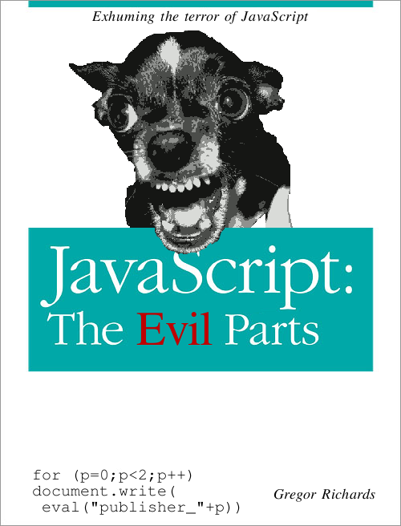

肖雪洁 / Xuejie "Rafael" Xiao / @defmacro
Okay, let's get to our topic!
We all love Ruby(or at least I do)
But we cannot use Ruby everywhere
In modern browsers, we can only use JavaScript
But JavaScript is ...
Do we have a solution for this?
Try Webruby!
So, how can I use webruby?
This time, let's do something different!
Let's get started!
var http = require('http');
http.createServer(function (req, res) {
res.writeHead(200, {'Content-Type': 'text/plain'});
res.end('RubyConfChina 2013 is awesome!');
}).listen(1337);
console.log('Server running at http://127.0.0.1:1337/');
MrubyJs.global.require('http').createServer do |req, res|
res.writeHead(200, {'Content-Type' => 'text/plain'})
res.end("RubyConfChina 2013 is awesome!\n")
end.listen(1337)
MrubyJs.global.console.log('Server running at http://127.0.0.1:1337/')
require 'sinatra'
get '/' do
'RubyConfChina 2013 is awesome!'
end
| Version | Time per request(mean) |
|---|---|
| Webruby | 1.718 ms |
| Node.js | 0.241 ms |
| Ruby(sinatra) | 0.890 ms |
Okay, I've seen this, but what's inside webruby?
An optimizable subset of JavaScript, intended primary as a compiler target
| Version | Raw | gzip -1 |
|---|---|---|
| O0 with parsing code | 3.3M | 780K |
| O0 without parsing code | 2.3M | 541K |
| O2 with parsing code | 1.4M | 379K |
| O2 without parsing code | 863K | 252K |
People should have the freedom to use whatever programming languages they enjoy on the browser!
(The end of my original slides)
How does this work?
tree app
app
├── another.rb
├── app.rb
└── foo
└── bar.rb
1 directory, 3 files
const uint8_t another_irep[] = {
0x52,0x49,0x54,0x45,0x30,0x30,0x30,0x31,0xf1,0x94,0x00,0x00,0x00,0xa6,0x4d,0x41,
...
const uint8_t app_irep[] = {
0x52,0x49,0x54,0x45,0x30,0x30,0x30,0x31,0xbc,0x55,0x00,0x00,0x00,0x98,0x4d,0x41,
...
const uint8_t foo_bar_irep[] = {
0x52,0x49,0x54,0x45,0x30,0x30,0x30,0x31,0xb5,0xea,0x00,0x00,0x00,0xa6,0x4d,0x41,
...
switch (idx) {
case 0:
result = mrb_load_irep(mrb, another_irep);
break;
case 1:
result = mrb_load_irep(mrb, app_irep);
break;
case 2:
result = mrb_load_irep(mrb, foo_bar_irep);
break;
}
module Kernel
@@REQUIRED_MODULES = {
"another" => 0,
"app" => 1,
"foo/bar" => 2
}
def require(name)
return false unless @@REQUIRED_MODULES.include?(name)
require_internal(@@REQUIRED_MODULES[name])
@@REQUIRED_MODULES.delete(name)
true
end
end